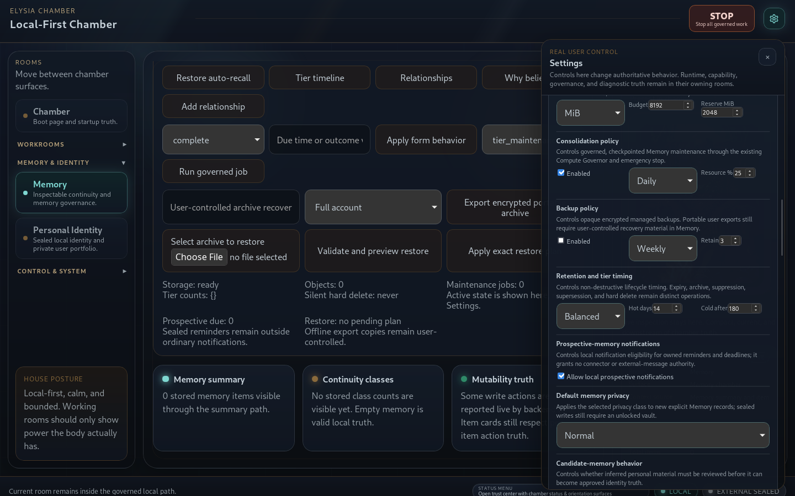
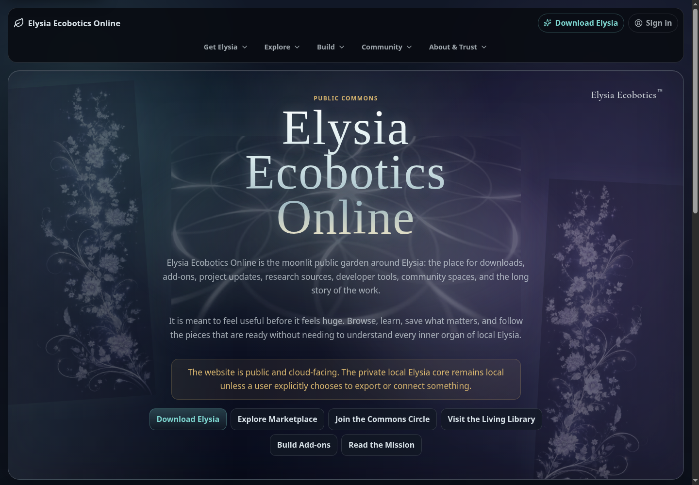
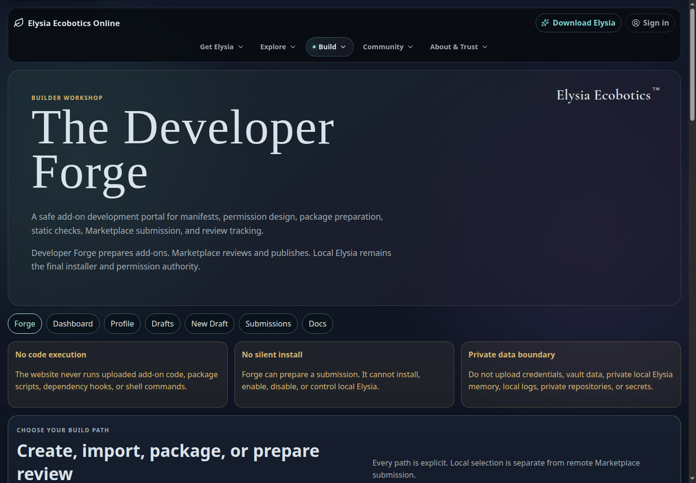
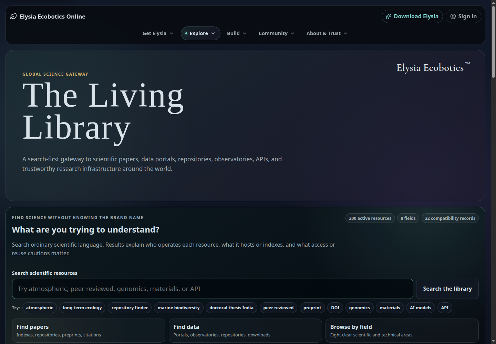

01 · Local application
Elysia
Local models, private memory, and user-controlled hardware.
Engineering case study · EcoSyneva Commons LLC
Local intelligence, governed development, and ecological computing.
I am developing Elysia Ecobotics as an ecosystem that combines a local AI application, developer tools with explicit permissions, and a public platform for research and collaboration. Its environmental purpose connects this software foundation to ongoing work in sensing and embodied systems.
The central engineering problem is how to make AI useful across research, coding, and everyday work while keeping personal context and machine authority under the user’s control. I separate local computation, approved development work, and public participation into systems with distinct responsibilities.
The result spans desktop and API development, model integration, structured memory, permissions, release integrity, and web platform engineering. Ecological research provides a practical direction for these tools: inspectable analysis, reproducible workflows, and eventually field observation.
Elysia Ecobotics
01 · Local application
Local models, private memory, and user-controlled hardware.
02 · Developer environment
Repository inspection, proposals, and reviewed changes in VS Code.
03 · Public platform
Research resources, add-on discovery, and community participation.
An online sign-in does not grant access to local memories, files, credentials, logs, or machine state. A selected export or connection is a separate, explicit action.
Elysia runs through a Python runtime and local FastAPI bridge, with a React and TypeScript interface inside a Tauri desktop shell. Ollama supplies local model execution. Role-based routing supports multiple installed models and configured local alternatives; it does not silently fall back to a cloud model.
The Memory Fabric organizes local records with ownership, revisions, provenance, and explicit sharing rules. Identity, authentication sessions, profile context, and ordinary memory have separate responsibilities.
Memory changes and sharing have visible consequences. Attached files and generated artifacts are not automatically promoted into persistent memory.
Current development supports approved file inspection, bounded calculations, data summaries, and local artifacts. Model requests, tools, and higher-risk operations pass through policy and approval services.
Local operation is the default. Optional downloads and outward research require their own configuration and permission boundaries.
Engineering evidence: automated account and memory tests exercise clean initialization, session revocation, account separation, deliberate sharing, and refusal of stale approvals. These checks target state transitions and access boundaries, rather than relying only on interface labels.
Codev is the first-party VS Code extension connected to local Elysia. Workspace trust and explicit repository approval are separate requirements. Inspection starts with bounded metadata; reading selected files and applying changes require the appropriate local authority.
The extension delegates actions to the local API instead of treating a chat request as unrestricted machine permission. A bounded command catalog and explicit approval control supported checks.
Current planning responses are constrained. General autonomous coding reasoning remains a development direction, not a capability claimed for the released extension.
Codev’s VSIX packaging normalizes archive metadata for reproducible bytes and checks which files belong in a distributable package.
Across the ecosystem, the online Developer Forge adds manifest validation, declared permissions, package checksums, and review records. Package integrity, review approval, and local execution permission remain distinct decisions.
The public platform provides downloads, research discovery, developer resources, and account-based collaboration. It uses React, TypeScript, and Vite, with Supabase authentication and Postgres, Cloudflare Pages hosting, and Workers/R2 services for selected account and storage workflows.
The Living Library provides searchable scientific resources with source, access, and reuse context. Commune and Commons Circle provide community, profile, and participation workflows.
The Forge supports manifest editing, permission declarations, selected-package inspection, export, and checksum verification. Submission creates a review snapshot; it does not automatically publish or install an add-on.
Authentication, profiles, participation gates, role-based review, moderation tools, and legal resources support the platform. Public browsing and privileged actions have different access requirements.
Local credentials and sessions do not become ordinary memory or tool context. Online profiles are managed independently, preventing account linkage from becoming an implicit data export.
Approval is tied to a selected resource and operation. A proposal, trusted workspace, or published add-on listing does not confer blanket authority over a computer.
Revision history, provenance, operation receipts, and controlled state transitions help explain what changed and under whose authority. Tests cover rejection paths as well as successful actions.
Static scans and checksums provide evidence; they are not guarantees of safety. Online review and public distribution remain separate from local validation, installation, and permission decisions.
My environmental research shapes the long-term purpose: tools for examining geospatial and remote-sensing material, following data provenance, and making ecological analysis reproducible. The software foundation can support researchers before any physical platform is ready.
Hardware work includes Arduino bench-node firmware for identification, status, and heartbeat signals, alongside Raspberry Pi and microcontroller integration plans. This is early commissioning and interface work.
Sensor integration, edge computing, computer vision, and robotic observation are research directions. Companion and Surveyor concepts explore how local intelligence could support ecological data collection; they are not presented as flight-ready or autonomous field products.
As founder, architect, and developer, I lead Elysia Ecobotics through EcoSyneva Commons LLC. My work connects the local application, developer extension, and online platform, with particular attention to how they exchange information and where their authority stops.
An empty-memory qualification view from the local application and signed-out views of the public platform. Select any image to inspect the full screenshot.

Clean qualification profile showing memory stewardship and user-controlled settings.

The live entry point for releases, resources, and online participation.

Add-on preparation and review are presented separately from local installation authority.

Research discovery organized around scientific questions and source context.
Public releases and current development are distinct. Elysia and Codev have published v1.0 releases; the capabilities discussed here also reflect ongoing work in their current development codebases.